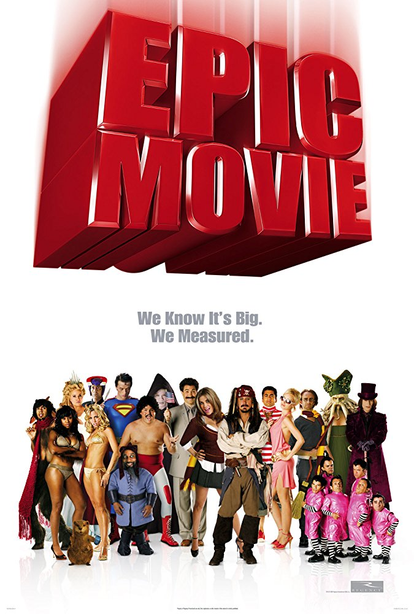
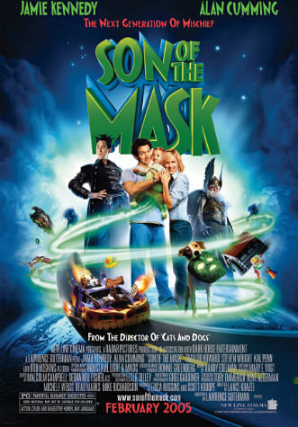
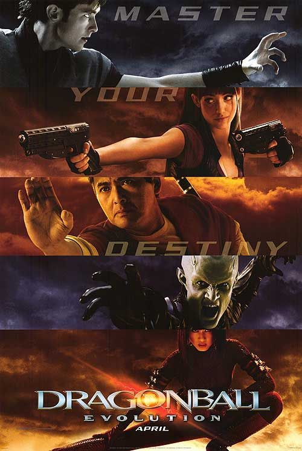
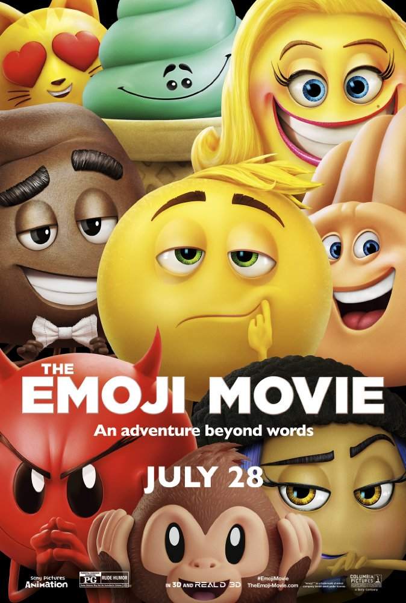

's least favorite movies
's least favorite movies
Epic Movie (2007)
"Parody films are meant to parody and this one fails to come even close to funny. Its irreverence is pathetic, not hilarious."
"After watching this movie, I just couldn't stop talking about it. Mind you, not in the sense that someone can't stop talking about a great book or show, but more along the line of how someone can't stop talking about their colonoscopy during a diner conversation."
Son of the Mask (2005)
"I can just picture how this movie came to be: 'So how else can we screw up our careers?' 'I know! Let's take a film that was wildly successful and make a sequel out of it!'"
"What the hell is this movie about? Well, if I didn't know that "son of the Mask" is categorized as comedy, I would never have a clue! A comedy? A tragedy, that's the right genre for this yet-another-so-called-sequel."
Dragonball: Evolution (2009)
"My childhood is ruined. I have witnessed the death of a beloved franchise millions have come to adore and respect. This movie is not an adaptation, nor is it an homage of any sort. It is a mockery. A sheer insult to all those whom cherish Dragonball deep within their hearts and souls."
"The special effects in this movie are like a four year old with a sparkler on New Year's in comparison to the fireworks overhead."
The Emoji Movie (2017)
"The funniest thing about this 'jam packed comedy' was the fact that I was that nobody in the whole audience was laughing."
"Go home Hollywood, you are drunk!!"
"There can be some fun had in using emojis to express yourself. Is it fun to sit through a ninety-minute film about emojis though? The answer is a resounding no."